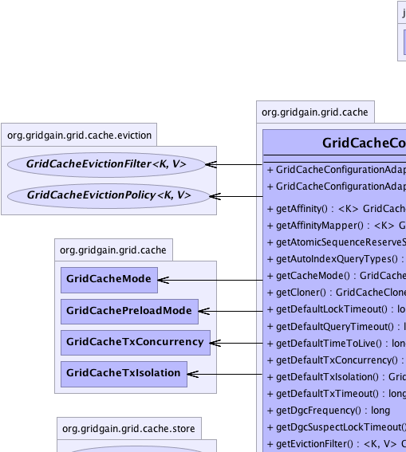
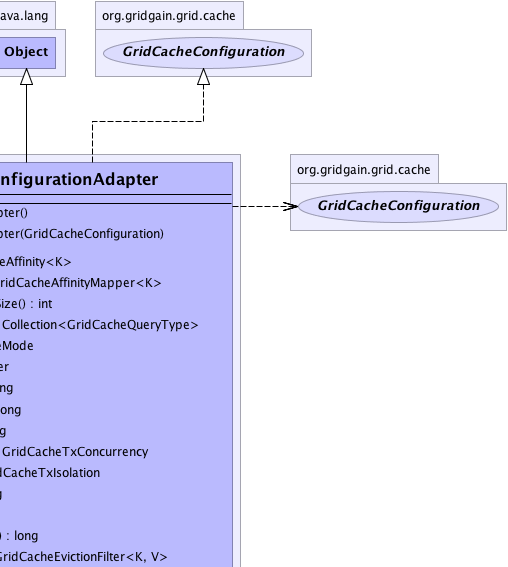
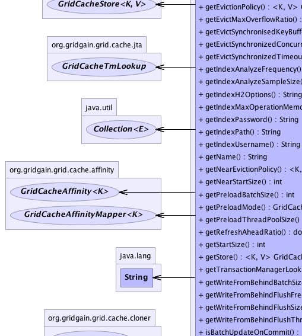
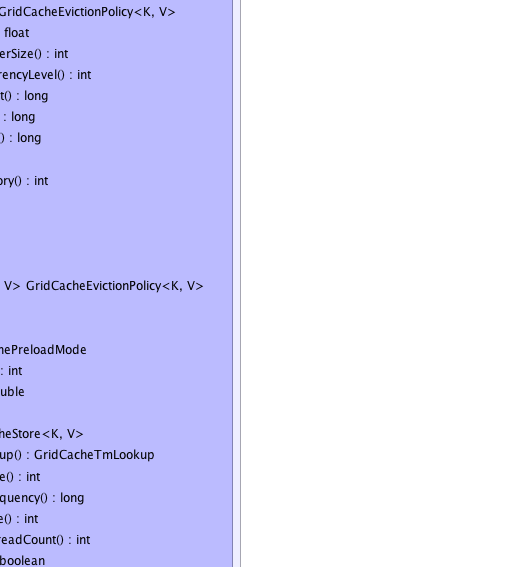
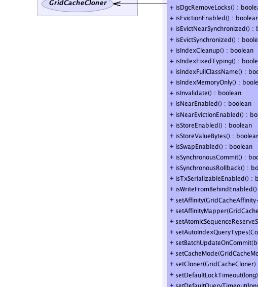
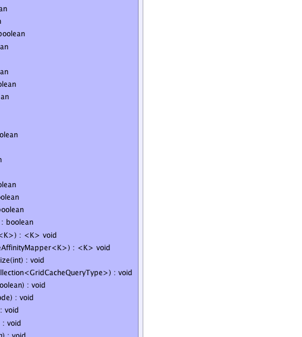
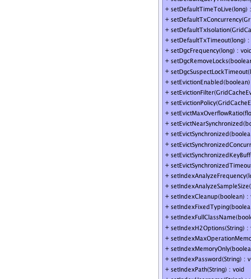
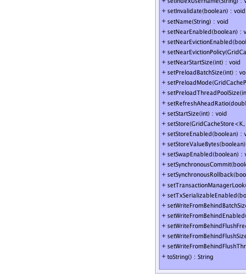
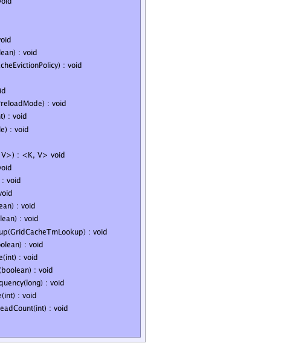

org.gridgain.grid.cache.GridCacheConfigurationAdapter
org.gridgain.grid.cache.GridCacheConfigurationAdapter
|
GridGain™ 3.6.0c
Community Edition |
|||||||||
| PREV CLASS NEXT CLASS | FRAMES NO FRAMES | |||||||||
| SUMMARY: NESTED | FIELD | CONSTR | METHOD | DETAIL: FIELD | CONSTR | METHOD | |||||||||
java.lang.Object
public class GridCacheConfigurationAdapter
Cache configuration adapter. Use this convenience adapter when creating
cache configuration to set on GridConfigurationAdapter.setCacheConfiguration(GridCacheConfiguration...)
method. This adapter is a simple bean and can be configured from Spring XML files
(or other DI frameworks).
Note that absolutely all configuration properties are optional, so users should only change what they need.
| Wiki | |
| Forum |
|  |  |
|  |  |
|  |  |
|  |  |
|  |  |
| Field Summary |
|---|
| Constructor Summary | |
|---|---|
GridCacheConfigurationAdapter()
Empty constructor (all values are initialized to their defaults). |
|
GridCacheConfigurationAdapter(GridCacheConfiguration cc)
Copy constructor. |
|
| Method Summary | ||
|---|---|---|
|
getAffinity()
Gets key topology resolver to provide mapping from keys to nodes. |
|
|
getAffinityMapper()
Affinity key mapper used to provide custom affinity key for any given key. |
|
int |
getAtomicSequenceReserveSize()
Gets default number of sequence values reserved for GridCacheAtomicSequence instances. |
|
Collection<GridCacheQueryType> |
getAutoIndexQueryTypes()
Gets query types to use to auto index values of boxed and unboxed primitive types, Strings and Dates. |
|
GridCacheMode |
getCacheMode()
Gets caching mode to use. |
|
GridCacheCloner |
getCloner()
Cloner to be used for cloning values that are returned to user only if GridCacheFlag.CLONE
is set on GridCacheProjection. |
|
long |
getDefaultLockTimeout()
Gets default lock acquisition timeout. |
|
long |
getDefaultQueryTimeout()
Gets default query timeout. |
|
long |
getDefaultTimeToLive()
Gets time to live for all objects in cache. |
|
GridCacheTxConcurrency |
getDefaultTxConcurrency()
Default cache transaction concurrency to use when one is not explicitly specified. |
|
GridCacheTxIsolation |
getDefaultTxIsolation()
Default cache transaction isolation to use when one is not explicitly specified. |
|
long |
getDefaultTxTimeout()
Gets default transaction timeout. |
|
long |
getDgcFrequency()
Gets frequency at which distributed garbage collector will check other nodes if there are any zombie locks left over. |
|
long |
getDgcSuspectLockTimeout()
Gets timeout after which locks are considered to be suspicious. |
|
|
getEvictionFilter()
Gets eviction filter to specify which entries should not be evicted (except explicit evict by calling GridCacheEntry.evict(GridPredicate[])). |
|
|
getEvictionPolicy()
Gets cache eviction policy. |
|
float |
getEvictMaxOverflowRatio()
This value denotes the maximum size of eviction queue in percents of cache size in case of distributed cache (replicated and partitioned) and using synchronized eviction (that is if GridCacheConfiguration.isEvictSynchronized() returns
true). |
|
int |
getEvictSynchronisedKeyBufferSize()
Gets size of the key buffer for synchronous evictions. |
|
int |
getEvictSynchronizedConcurrencyLevel()
Gets synchronous eviction concurrency level. |
|
long |
getEvictSynchronizedTimeout()
Gets synchronous eviction timeout. |
|
long |
getIndexAnalyzeFrequency()
Gets frequency of running H2 "ANALYZE" command in order to update selectivity statistics of H2 database tables. |
|
long |
getIndexAnalyzeSampleSize()
Gets number of samples used to run H2 "ANALYZE" command in order to update selectivity statistics of H2 database tables. |
|
String |
getIndexH2Options()
|
|
int |
getIndexMaxOperationMemory()
Gets the maximum memory used per single operation with query index (store and remove), in bytes. |
|
String |
getIndexPassword()
Optional password for index store. |
|
String |
getIndexPath()
Absolute or relative to GRIDGAIN_HOME path for storing query indexes on disk
(if they are configured to be stored on disk). |
|
String |
getIndexUsername()
Optional user name for index store. |
|
String |
getName()
Cache name. |
|
|
getNearEvictionPolicy()
Gets eviction policy for near cache which is different from the one used for
partitioned cache. |
|
int |
getNearStartSize()
Gets initial cache size for near cache which will be used to pre-create internal hash table after start. |
|
int |
getPreloadBatchSize()
Gets size (in number bytes) to be loaded within a single preload message. |
|
GridCachePreloadMode |
getPreloadMode()
Gets preload mode for distributed cache. |
|
int |
getPreloadThreadPoolSize()
Gets size of preloading thread pool. |
|
double |
getRefreshAheadRatio()
Gets refresh-ahead ratio. |
|
int |
getStartSize()
Gets initial cache size which will be used to pre-create internal hash table after start. |
|
|
getStore()
Gets underlying persistent storage for read-through and write-through operations. |
|
GridCacheTmLookup |
getTransactionManagerLookup()
Gets transaction manager finder for integration for JEE app servers. |
|
int |
getWriteFromBehindBatchSize()
Maximum batch size for write-from-behind cache store operations. |
|
long |
getWriteFromBehindFlushFrequency()
Frequency with which write-from-behind cache is flushed to the cache store in milliseconds. |
|
int |
getWriteFromBehindFlushSize()
Maximum size of the write-from-behind cache. |
|
int |
getWriteFromBehindFlushThreadCount()
Number of threads that will perform cache flushing if either cache size exceeded value defined by GridCacheConfiguration.getWriteFromBehindFlushSize(), or flush interval defined by
GridCacheConfiguration.getWriteFromBehindFlushFrequency() is elapsed. |
|
boolean |
isBatchUpdateOnCommit()
If true, then all transactional values will be written to persistent
storage at GridCacheTx.commit() phase. |
|
boolean |
isDgcRemoveLocks()
Gets system-wide flag indicating whether DGC manager should remove locks in question or only report them. |
|
boolean |
isEvictionEnabled()
Flag to enable/disable cache eviction policy. |
|
boolean |
isEvictNearSynchronized()
Gets flag indicating whether eviction on primary node is synchronized with near nodes where entry is kept. |
|
boolean |
isEvictSynchronized()
Gets flag indicating whether eviction is synchronized between primary and backup nodes. |
|
boolean |
isIndexCleanup()
Flag indicating whether query storage should be deleted or not upon start (default is true). |
|
boolean |
isIndexFixedTyping()
This flag indicates that the same key object can only be associated with the same value type and a value type can only be associated with keys of the same type. |
|
boolean |
isIndexFullClassName()
Flag indicating whether full class names, i.e. |
|
boolean |
isIndexMemoryOnly()
Flag indicating whether query index should be stored only in memory (not on disk). |
|
boolean |
isInvalidate()
Invalidation flag. |
|
boolean |
isNearEnabled()
Gets flag indicating whether near cache is enabled in case of PARTITIONED mode. |
|
boolean |
isNearEvictionEnabled()
Flag to enable/disable near cache eviction policy. |
|
boolean |
isStoreEnabled()
Flag indicating whether GridGain should activate read-through/write-through behaviour by default. |
|
boolean |
isStoreValueBytes()
Flag indicating if cached values should be additionally stored in serialized form. |
|
boolean |
isSwapEnabled()
Flag indicating whether GridGain should use swap storage by default. |
|
boolean |
isSynchronousCommit()
Flag indicating whether GridGain should wait for commit replies from all nodes. |
|
boolean |
isSynchronousRollback()
Flag indicating whether GridGain should wait for rollback replies from all nodes. |
|
boolean |
isTxSerializableEnabled()
Gets flag to enable/disable GridCacheTxIsolation.SERIALIZABLE isolation
level for cache transactions. |
|
boolean |
isWriteFromBehindEnabled()
Flag indicating whether GridGain should use write-from-behind behaviour for the cache store. |
|
|
setAffinity(GridCacheAffinity<K> aff)
Sets affinity for cache keys. |
|
|
setAffinityMapper(GridCacheAffinityMapper<K> affMapper)
Sets custom affinity mapper. |
|
void |
setAtomicSequenceReserveSize(int seqReserveSize)
Sets default number of sequence values reserved for GridCacheAtomicSequence instances. |
|
void |
setAutoIndexQueryTypes(Collection<GridCacheQueryType> autoIndexTypes)
Sets query types to use to auto index values of primitive types. |
|
void |
setBatchUpdateOnCommit(boolean txBatchUpdate)
Sets flag indicating if persistent store should be updated after every cache operation or once at commit time. |
|
void |
setCacheMode(GridCacheMode cacheMode)
Sets caching mode. |
|
void |
setCloner(GridCacheCloner cloner)
Sets cloner to be used if GridCacheFlag.CLONE flag is set on projection. |
|
void |
setDefaultLockTimeout(long dfltLockTimeout)
Sets default lock timeout in milliseconds. |
|
void |
setDefaultQueryTimeout(long dfltQryTimeout)
Sets default query timeout, 0 for never. |
|
void |
setDefaultTimeToLive(long ttl)
Sets time to live for all objects in cache. |
|
void |
setDefaultTxConcurrency(GridCacheTxConcurrency dfltConcurrency)
Sets default transaction concurrency. |
|
void |
setDefaultTxIsolation(GridCacheTxIsolation dfltIsolation)
Sets default transaction isolation. |
|
void |
setDefaultTxTimeout(long dfltTxTimeout)
Sets default transaction timeout in milliseconds. |
|
void |
setDgcFrequency(long dgcFreq)
Sets frequency in milliseconds for internal distributed garbage collector. |
|
void |
setDgcRemoveLocks(boolean dgcRmvLocks)
Sets DGC remove locks flag. |
|
void |
setDgcSuspectLockTimeout(long dgcSuspectLockTimeout)
Sets suspect lock timeout in milliseconds for internal distributed garbage collector. |
|
void |
setEvictionEnabled(boolean evictEnabled)
Sets flag to enable/disable eviction policy. |
|
|
setEvictionFilter(GridCacheEvictionFilter<K,V> evictFilter)
Sets eviction filter. |
|
void |
setEvictionPolicy(GridCacheEvictionPolicy evictPolicy)
Sets cache eviction policy. |
|
void |
setEvictMaxOverflowRatio(float evictMaxOverflowRatio)
Sets maximum eviction overflow ratio. |
|
void |
setEvictNearSynchronized(boolean evictNearSync)
Sets flag indicating whether eviction is synchronized with near nodes. |
|
void |
setEvictSynchronized(boolean evictSync)
Sets flag indicating whether eviction is synchronized with backup nodes (or the rest of the nodes for replicated cache). |
|
void |
setEvictSynchronizedConcurrencyLevel(int evictSyncConcurrencyLvl)
Sets concurrency level for synchronous evictions |
|
void |
setEvictSynchronizedKeyBufferSize(int evictKeyBufferSize)
Sets eviction key buffer size. |
|
void |
setEvictSynchronizedTimeout(long evictSyncTimeout)
Sets synchronous eviction timeout. |
|
void |
setIndexAnalyzeFrequency(long idxAnalyzeFreq)
Sets frequency of running H2 "ANALYZE" command ( 0 to disable). |
|
void |
setIndexAnalyzeSampleSize(long idxAnalyzeSampleSize)
Sets number of samples used to run H2 "ANALYZE" command. |
|
void |
setIndexCleanup(boolean idxCleanup)
Flag indicating whether indexes should be deleted on system shutdown or startup. |
|
void |
setIndexFixedTyping(boolean idxFixedTyping)
Sets fixed typing flag. |
|
void |
setIndexFullClassName(boolean idxFullClassName)
Flag indicating weather full or simple class names should be used for querying. |
|
void |
setIndexH2Options(String idxH2Opt)
Any additional options for the underlying H2 database used for querying. |
|
void |
setIndexMaxOperationMemory(int idxMaxOperationMem)
Maximum memory used for delete and insert in bytes. |
|
void |
setIndexMemoryOnly(boolean idxMemOnly)
Flag indicating whether query indexes should be kept only in memory or offloaded on disk as well. |
|
void |
setIndexPassword(String idxPswd)
Optional password to login to index database. |
|
void |
setIndexPath(String idxPath)
Sets file path (absolute or relative to GRIDGAIN_HOME to store
cache indexes. |
|
void |
setIndexUsername(String idxUser)
Optional username to login to index database. |
|
void |
setInvalidate(boolean invalidate)
Sets invalidation flag for this transaction. |
|
void |
setName(String name)
Sets cache name. |
|
void |
setNearEnabled(boolean nearEnabled)
Sets flag indicating whether near cache is enabled in case of PARTITIONED mode. |
|
void |
setNearEvictionEnabled(boolean nearEvictEnabled)
Sets flag to enable/disable near eviction policy. |
|
void |
setNearEvictionPolicy(GridCacheEvictionPolicy nearEvictPolicy)
Sets eviction policy for near cache. |
|
void |
setNearStartSize(int nearStartSize)
Start size for near cache. |
|
void |
setPreloadBatchSize(int preloadBatchSize)
Sets preload batch size. |
|
void |
setPreloadMode(GridCachePreloadMode preloadMode)
Sets cache preload mode. |
|
void |
setPreloadThreadPoolSize(int preloadPoolSize)
Sets size of preloading thread pool. |
|
void |
setRefreshAheadRatio(double refreshAheadRatio)
Sets refresh-ahead ratio for cache entries. |
|
void |
setStartSize(int startSize)
Initial size for internal hash map. |
|
|
setStore(GridCacheStore<K,V> store)
Sets persistent storage for cache data. |
|
void |
setStoreEnabled(boolean storeEnabled)
|
|
void |
setStoreValueBytes(boolean storeValueBytes)
Flag indicating if cached values should be additionally stored in serialized form. |
|
void |
setSwapEnabled(boolean swapEnabled)
Flag indicating whether swap storage ise enabled or not. |
|
void |
setSynchronousCommit(boolean syncCommit)
Flag indicating whether nodes on which user transaction completed should wait for the same transaction on remote nodes to complete. |
|
void |
setSynchronousRollback(boolean syncRollback)
Flag indicating whether nodes on which user transaction was rolled back should wait for the same transaction on remote nodes to complete. |
|
void |
setTransactionManagerLookup(GridCacheTmLookup tmLookup)
Sets look up mechanism for available TransactionManager implementation, if any. |
|
void |
setTxSerializableEnabled(boolean txSerEnabled)
Enables/disables serializable cache transactions. |
|
void |
setWriteFromBehindBatchSize(int writeFromBehindBatchSize)
Sets maximum batch size for write-from-behind cache. |
|
void |
setWriteFromBehindEnabled(boolean writeFromBehindEnabled)
Sets flag indicating whether write-from-behind is enabled. |
|
void |
setWriteFromBehindFlushFrequency(long writeFromBehindFlushFrequency)
Sets write-from-behind flush frequency. |
|
void |
setWriteFromBehindFlushSize(int writeFromBehindFlushSize)
Sets write-from-behind flush size. |
|
void |
setWriteFromBehindFlushThreadCount(int writeFromBehindFlushThreadCnt)
Sets flush thread count for write-from-behind cache. |
|
String |
toString()
|
|
| Methods inherited from class java.lang.Object |
|---|
clone, equals, finalize, getClass, hashCode, notify, notifyAll, wait, wait, wait |
| Constructor Detail |
|---|
public GridCacheConfigurationAdapter()
public GridCacheConfigurationAdapter(GridCacheConfiguration cc)
cc - Configuration to copy.| Method Detail |
|---|
public String getName()
null, then this will be considered a default
cache which can be accessed via Grid.cache() method. Otherwise, if name
is provided, the cache will be accessed via Grid.cache(String) method.
getName in interface GridCacheConfigurationpublic void setName(String name)
name - Cache name. May be null, but may not be empty string.public long getDefaultTimeToLive()
GridCacheConfiguration0 which means that objects never expire.
getDefaultTimeToLive in interface GridCacheConfigurationpublic void setDefaultTimeToLive(long ttl)
ttl - Time to live for all objects in cache.public <K,V> GridCacheEvictionPolicy<K,V> getEvictionPolicy()
GridCacheLirsEvictionPolicy
will be used with default settings.
getEvictionPolicy in interface GridCacheConfigurationpublic void setEvictionPolicy(GridCacheEvictionPolicy evictPolicy)
evictPolicy - Cache expiration policy.public boolean isEvictionEnabled()
true, which means that
eviction policy for cache is enabled. If set to false, then evictions
will not happen even if GridCacheConfiguration.getEvictionPolicy() was set.
Note that handling evictions does carry certain overhead, so it is recommended to set
this property to false if you are not planning to evict entries from cache.
isEvictionEnabled in interface GridCacheConfigurationTrue if eviction policy is enabled, false otherwise.public void setEvictionEnabled(boolean evictEnabled)
GridCacheConfigurationAdapter.isEvictionEnabled()
for more information.
evictEnabled - Flag to enable/disable eviction policy.public <K,V> GridCacheEvictionPolicy<K,V> getNearEvictionPolicy()
near cache which is different from the one used for
partitioned cache. By default, GridCacheLirsEvictionPolicy
will be used with maximum size set to GridCacheConfiguration.DFLT_NEAR_SIZE value.
getNearEvictionPolicy in interface GridCacheConfigurationpublic void setNearEvictionPolicy(GridCacheEvictionPolicy nearEvictPolicy)
GridCacheMode.PARTITIONED caching mode.
nearEvictPolicy - Eviction policy for near cache.public boolean isNearEvictionEnabled()
true, which means that
eviction policy for near cache is enabled. If set to false, then evictions for
near cache will not happen even if GridCacheConfiguration.getNearEvictionPolicy() was set.
Note that this property only makes sense for PARTITIONED caches.
isNearEvictionEnabled in interface GridCacheConfigurationTrue if near eviction policy is enabled, false otherwise.public void setNearEvictionEnabled(boolean nearEvictEnabled)
GridCacheConfigurationAdapter.isNearEvictionEnabled()
for more information.
nearEvictEnabled - Flag to enable/disable near eviction policy.public boolean isEvictSynchronized()
true and swap is disabled then
GridCacheProjection.evict(Object, GridPredicate[]) and all its
variations will involve all nodes where an entry is kept. For replicated
cache this is a group of nodes responsible for partition to which
corresponding key belongs. If this property is set to false then
eviction is done independently on cache nodes. Default value is false.
Note that it's not recommended to set this value to true if cache
store is configured since it will allow to significantly improve cache
performance.
isEvictSynchronized in interface GridCacheConfigurationtrue If eviction is synchronized with backup nodes (or the
rest of the nodes in case of replicated cache), false if not.public void setEvictSynchronized(boolean evictSync)
evictSync - true if synchronized, false if not.public void setEvictNearSynchronized(boolean evictNearSync)
evictNearSync - true if synchronized, false if not.public boolean isEvictNearSynchronized()
true.
Note that in most cases this property should be set to true to keep
cache consistency. But there may be the cases when user may use some
special near eviction policy to have desired control over near cache
entry set.
isEvictNearSynchronized in interface GridCacheConfigurationtrue If eviction is synchronized with near nodes in
partitioned cache, false if not.public int getEvictSynchronisedKeyBufferSize()
Default value is defined by GridCacheConfiguration.DFLT_EVICT_KEY_BUFFER_SIZE.
getEvictSynchronisedKeyBufferSize in interface GridCacheConfigurationpublic void setEvictSynchronizedKeyBufferSize(int evictKeyBufferSize)
evictKeyBufferSize - Eviction key buffer size.public int getEvictSynchronizedConcurrencyLevel()
GridCacheConfiguration.isEvictNearSynchronized() or GridCacheConfiguration.isEvictSynchronized() set
to true. When synchronous evictions are enabled, it is possible that
eviction policy will try to evict entries faster than they can be synchronized
with backup or near nodes. This value specifies how many concurrent synchronous
eviction sessions should be allowed before the system is forced to wait and let
synchronous evictions catch up with the eviction policy.
Note that if synchronous evictions start lagging, it is possible that you have either
too big or too small eviction key buffer size or small eviction timeout. In that case
you will need to adjust GridCacheConfiguration.getEvictSynchronisedKeyBufferSize() or GridCacheConfiguration.getEvictSynchronizedTimeout()
values as well.
Default value is defined by GridCacheConfiguration.DFLT_EVICT_SYNCHRONOUS_CONCURRENCY_LEVEL.
getEvictSynchronizedConcurrencyLevel in interface GridCacheConfigurationpublic void setEvictSynchronizedConcurrencyLevel(int evictSyncConcurrencyLvl)
evictSyncConcurrencyLvl - Synchronous eviction concurrency level.public long getEvictSynchronizedTimeout()
Node that initiates eviction waits for responses from remote nodes within this timeout.
Default value is defined by GridCacheConfiguration.DFLT_EVICT_SYNCHRONOUS_TIMEOUT.
getEvictSynchronizedTimeout in interface GridCacheConfigurationpublic void setEvictSynchronizedTimeout(long evictSyncTimeout)
evictSyncTimeout - Synchronous eviction timeout.public float getEvictMaxOverflowRatio()
GridCacheConfiguration.isEvictSynchronized() returns
true).
That queue is used internally as a buffer to decrease network costs for synchronized eviction. Once queue size reaches specified value all required requests for all entries in the queue are sent to remote nodes and the queue is cleared.
Default value is defined by GridCacheConfiguration.DFLT_MAX_EVICTION_OVERFLOW_RATIO and
equals to 10%.
getEvictMaxOverflowRatio in interface GridCacheConfigurationpublic void setEvictMaxOverflowRatio(float evictMaxOverflowRatio)
evictMaxOverflowRatio - Maximum eviction overflow ratio.public <K,V> GridCacheEvictionFilter<K,V> getEvictionFilter()
GridCacheEntry.evict(GridPredicate[])).
If GridCacheEvictionFilter.evictAllowed(GridCacheEntry) method returns
false then eviction policy will not be notified and entry will
never be evicted.
If not provided, any entry may be evicted depending on
eviction policy configuration.
getEvictionFilter in interface GridCacheConfigurationnull.public <K,V> void setEvictionFilter(GridCacheEvictionFilter<K,V> evictFilter)
evictFilter - Eviction filter.public GridCacheTxConcurrency getDefaultTxConcurrency()
GridCacheConfiguration.DFLT_TX_CONCURRENCY.
getDefaultTxConcurrency in interface GridCacheConfigurationGridCacheTxpublic void setDefaultTxConcurrency(GridCacheTxConcurrency dfltConcurrency)
dfltConcurrency - Default cache transaction concurrency.public boolean isTxSerializableEnabled()
GridCacheTxIsolation.SERIALIZABLE isolation
level for cache transactions. Serializable level does carry certain overhead and
if not used, should be disabled. Default value is false.
isTxSerializableEnabled in interface GridCacheConfigurationTrue if serializable transactions are enabled, false otherwise.public void setTxSerializableEnabled(boolean txSerEnabled)
GridCacheConfigurationAdapter.isTxSerializableEnabled()
for more information.
txSerEnabled - Flag to enable/disable serializable cache transactions.public GridCacheTxIsolation getDefaultTxIsolation()
GridCacheConfiguration.DFLT_TX_ISOLATION.
getDefaultTxIsolation in interface GridCacheConfigurationGridCacheTxpublic void setDefaultTxIsolation(GridCacheTxIsolation dfltIsolation)
dfltIsolation - Default cache transaction isolation.public int getStartSize()
GridCacheConfiguration.DFLT_START_SIZE.
getStartSize in interface GridCacheConfigurationpublic void setStartSize(int startSize)
startSize - Cache start size.public int getNearStartSize()
GridCacheConfiguration.DFLT_START_SIZE.
getNearStartSize in interface GridCacheConfigurationpublic void setNearStartSize(int nearStartSize)
GridCacheMode.PARTITIONED caching mode.
nearStartSize - Start size for near cache.public boolean isNearEnabled()
PARTITIONED mode. It's true
by default.
isNearEnabled in interface GridCacheConfigurationpublic void setNearEnabled(boolean nearEnabled)
PARTITIONED mode. It is true
by default.
nearEnabled - Flag indicating whether near cache is enabled.public <K,V> GridCacheStore<K,V> getStore()
getStore in interface GridCacheConfigurationpublic <K,V> void setStore(GridCacheStore<K,V> store)
store - Persistent cache store.public <K> GridCacheAffinity<K> getAffinity()
getAffinity in interface GridCacheConfigurationpublic <K> void setAffinity(GridCacheAffinity<K> aff)
aff - Cache key affinity.public GridCacheMode getCacheMode()
GridCacheMode.REPLICATED
mode will be used by default (defined by #DFLT_CACHE_MODE} constant).
getCacheMode in interface GridCacheConfigurationTrue if cache is local.public void setCacheMode(GridCacheMode cacheMode)
cacheMode - Caching mode.public boolean isBatchUpdateOnCommit()
true, then all transactional values will be written to persistent
storage at GridCacheTx.commit() phase. If false, then values
will be persisted after every operation. Default value is true.
isBatchUpdateOnCommit in interface GridCacheConfigurationpublic void setBatchUpdateOnCommit(boolean txBatchUpdate)
true.
txBatchUpdate - True if updates should be batched at the end of transaction,
false if updates should be propagated to persistent store
individually as they occur (without waiting to the end of transaction).public long getDefaultTxTimeout()
GridCacheConfiguration.DFLT_TRANSACTION_TIMEOUT
which is 0 and means that transactions will never time out.
getDefaultTxTimeout in interface GridCacheConfigurationpublic void setDefaultTxTimeout(long dfltTxTimeout)
GridCacheConfiguration.DFLT_TRANSACTION_TIMEOUT.
dfltTxTimeout - Default transaction timeout.public long getDefaultLockTimeout()
GridCacheConfiguration.DFLT_LOCK_TIMEOUT
which is 0 and means that lock acquisition will never timeout.
getDefaultLockTimeout in interface GridCacheConfigurationpublic void setDefaultLockTimeout(long dfltLockTimeout)
GridCacheConfiguration.DFLT_LOCK_TIMEOUT.
dfltLockTimeout - Default lock timeout.public long getDefaultQueryTimeout()
GridCacheConfiguration.DFLT_QUERY_TIMEOUT. 0 (zero)
means that the query will never timeout and will wait for completion.
getDefaultQueryTimeout in interface GridCacheConfiguration0 for never.public void setDefaultQueryTimeout(long dfltQryTimeout)
0 for never. For more information see
GridCacheConfigurationAdapter.getDefaultQueryTimeout().
dfltQryTimeout - Default query timeout.public boolean isInvalidate()
true, values will be invalidated (nullified) upon commit.
isInvalidate in interface GridCacheConfigurationpublic void setInvalidate(boolean invalidate)
false.
invalidate - Flag to set this cache into invalidation-based mode.
Default value is false.public void setStoreValueBytes(boolean storeValueBytes)
storeValueBytes - true if cached values should be additionally
stored in serialized form, false otherwise.public boolean isStoreValueBytes()
true by default.
isStoreValueBytes in interface GridCacheConfigurationtrue if cached values should be additionally stored in
serialized form, false otherwise.public double getRefreshAheadRatio()
For example, if refresh ratio is set to 0.75 and entry's time-to-live is
1 minute, then if this entry is accessed any time after 45 seconds
(which is 0.75 of a minute), the cached value will be immediately returned, but
entry will be automatically reloaded from persistent store in the background.
getRefreshAheadRatio in interface GridCacheConfigurationpublic void setRefreshAheadRatio(double refreshAheadRatio)
refreshAheadRatio - Refresh-ahead ratio.public GridCacheTmLookup getTransactionManagerLookup()
getTransactionManagerLookup in interface GridCacheConfigurationpublic void setTransactionManagerLookup(GridCacheTmLookup tmLookup)
TransactionManager implementation, if any.
tmLookup - Lookup implementation that is used to receive JTA transaction manager.public void setPreloadMode(GridCachePreloadMode preloadMode)
preloadMode - Preload mode.public GridCachePreloadMode getPreloadMode()
Default is defined by GridCacheConfiguration.DFLT_PRELOAD_MODE.
getPreloadMode in interface GridCacheConfigurationpublic int getPreloadBatchSize()
GridCacheConfiguration.DFLT_PRELOAD_BATCH_SIZE.
getPreloadBatchSize in interface GridCacheConfigurationpublic void setPreloadBatchSize(int preloadBatchSize)
preloadBatchSize - Preload batch size.public String getIndexPath()
GRIDGAIN_HOME path for storing query indexes on disk
(if they are configured to be stored on disk). If not provided, by default indexes will be
stored under default folder defined by GridCacheConfiguration.DFLT_IDX_PARENT_FOLDER_NAME constant.
getIndexPath in interface GridCacheConfigurationGRIDGAIN_HOME path for storing query indexes on disk.public void setIndexPath(String idxPath)
GRIDGAIN_HOME to store
cache indexes.
idxPath - Path to index database, default will be used if null.public boolean isIndexFullClassName()
Class.getName() values, or
simple class names, i.e. Class.getSimpleName() values should be used in
queries.
Default value is false.
isIndexFullClassName in interface GridCacheConfigurationpublic void setIndexFullClassName(boolean idxFullClassName)
false. This property must be set to true whenever
simple class names are not unique.
idxFullClassName - Flag indicating weather full or simple class names should be used for querying.public Collection<GridCacheQueryType> getAutoIndexQueryTypes()
getAutoIndexQueryTypes in interface GridCacheConfigurationpublic void setAutoIndexQueryTypes(Collection<GridCacheQueryType> autoIndexTypes)
autoIndexTypes - Query types to use to auto index values of primitive types.public boolean isIndexFixedTyping()
For example, let's assume that you have keys K1 and K2 of types
Kt1 and Kt2, and values V1 and V2 of type Vt1
and Vt2. If this flag is set to true, then once key K1 is
associated with value of type Vt1, this K1 can never be associated
with a value of type Vt2. Also, once a value of type Vt1 is associated with
a key of type Kt1, all values of type Vt1 will have to be associated with
keys of type Kt1 and can never be associated with keys of type Kt2.
The behavior described above is how we usually operate with data. However, in certain
cases it may be desired to associate a key with values of different types over time and
in that case you should set this flag to false.
Setting this flag to true, which is default, allows cache implementation to
perform performance optimizations for queries.
Note that if this flag is false then it is impossible to run sql queries
containing any conditions on key field (which is '_key') since it is of binary type
in this case.
isIndexFixedTyping in interface GridCacheConfigurationTrue for fixed typing, false otherwise.public void setIndexFixedTyping(boolean idxFixedTyping)
GridCacheConfigurationAdapter.isIndexFixedTyping() for
more information.
idxFixedTyping - True for fixed typing.GridCacheConfigurationAdapter.isIndexFixedTyping()public boolean isIndexCleanup()
true).
isIndexCleanup in interface GridCacheConfigurationtrue, cache indexes will be cleaned up upon start.public void setIndexCleanup(boolean idxCleanup)
true.
idxCleanup - Flag indicating whether indexes should be deleted on stop or start.public boolean isIndexMemoryOnly()
Note that cache queries with LUCENE type cannot
be used in case of in-memory index database, i.e. if this property is true.
It is reasonable to configure this property with opposite value of GridCacheConfiguration.isSwapEnabled()
property. If swap is enabled, then most likely indexes will not fit in memory and
it is reasonable to overflow them to disk. Otherwise, if swap id disabled,
then indexes should fit in memory.
Default is true and is defined by GridCacheConfiguration.DFLT_IDX_MEM_ONLY constant.
isIndexMemoryOnly in interface GridCacheConfigurationTrue if index should be stored only in memory (not on disk).public void setIndexMemoryOnly(boolean idxMemOnly)
false.
idxMemOnly - Use only memory for indexes if true.public int getIndexMaxOperationMemory()
getIndexMaxOperationMemory in interface GridCacheConfigurationpublic void setIndexMaxOperationMemory(int idxMaxOperationMem)
0 means no limit.
idxMaxOperationMem - Maximum memory used for delete and insert in bytes.public String getIndexH2Options()
getIndexH2Options in interface GridCacheConfigurationpublic void setIndexH2Options(String idxH2Opt)
idxH2Opt - Addition options for underlying H2 database.public long getIndexAnalyzeFrequency()
GridCacheConfiguration.DFLT_IDX_ANALYZE_FREQ and equals to 10 minutes.
To disable query analyzing, set to 0
getIndexAnalyzeFrequency in interface GridCacheConfigurationpublic void setIndexAnalyzeFrequency(long idxAnalyzeFreq)
0 to disable).
idxAnalyzeFreq - Frequency in milliseconds.public long getIndexAnalyzeSampleSize()
GridCacheConfiguration.DFLT_IDX_ANALYZE_SAMPLE_SIZE and equals to 10000.
getIndexAnalyzeSampleSize in interface GridCacheConfigurationpublic void setIndexAnalyzeSampleSize(long idxAnalyzeSampleSize)
idxAnalyzeSampleSize - Number of samples (db table rows rows).public String getIndexUsername()
getIndexUsername in interface GridCacheConfigurationpublic void setIndexUsername(String idxUser)
idxUser - Index database user name.public String getIndexPassword()
getIndexPassword in interface GridCacheConfigurationpublic void setIndexPassword(String idxPswd)
idxPswd - Index database password.public long getDgcFrequency()
If not provided, default value is GridCacheConfiguration.DFLT_DGC_FREQUENCY.
getDgcFrequency in interface GridCacheConfiguration0 to disable GC).public void setDgcFrequency(long dgcFreq)
0 to disable distributed garbage collection.
If not provided, default value is GridCacheConfiguration.DFLT_DGC_FREQUENCY.
dgcFreq - Frequency of distributed GC in milliseconds (0 to disable GC).public long getDgcSuspectLockTimeout()
If not provided, default value is GridCacheConfiguration.DFLT_DGC_SUSPECT_LOCK_TIMEOUT.
getDgcSuspectLockTimeout in interface GridCacheConfigurationpublic void setDgcSuspectLockTimeout(long dgcSuspectLockTimeout)
If not provided, default value is GridCacheConfiguration.DFLT_DGC_SUSPECT_LOCK_TIMEOUT.
dgcSuspectLockTimeout - Timeout in milliseconds.public boolean isDgcRemoveLocks()
GridCache.dgc(long, boolean, boolean) method.
If false DGC manager will not release the locks that are not owned by any other node.
This may be useful for debugging purposes. You may also enable DGC tracing by enabling DEBUG
on GridCacheConfiguration.DGC_TRACE_LOGGER_NAME category.
If not provided, default value is GridCacheConfiguration.DFLT_DGC_REMOVE_LOCKS.
isDgcRemoveLocks in interface GridCacheConfigurationTrue if DGC should remove locks.GridCacheConfiguration.DGC_TRACE_LOGGER_NAMEpublic void setDgcRemoveLocks(boolean dgcRmvLocks)
dgcRmvLocks - True to remove locks.GridCacheConfigurationAdapter.isDgcRemoveLocks()public boolean isSynchronousCommit()
GridCacheTx.commit() method completes.
Setting this flag to true guarantees that update will have reached all nodes prior
to completing GridCacheTx.commit() method.
isSynchronousCommit in interface GridCacheConfigurationTrue in case of synchronous commit.public void setSynchronousCommit(boolean syncCommit)
syncCommit - True in case of synchronous commit.public boolean isSynchronousRollback()
GridCacheTx.commit() method completes.
Setting this flag to true guarantees that update will have reached all nodes prior
to completing GridCacheTx.commit() method.
isSynchronousRollback in interface GridCacheConfigurationTrue in case of synchronous rollback.public void setSynchronousRollback(boolean syncRollback)
syncRollback - True in case of synchronous rollback.public boolean isSwapEnabled()
GridCacheConfiguration.DFLT_SWAP_ENABLED constant.
Note that this flag may be overridden for cache projection created with flag
GridCacheFlag.SKIP_SWAP.
isSwapEnabled in interface GridCacheConfigurationTrue if swap storage is enabled.public void setSwapEnabled(boolean swapEnabled)
swapEnabled - true if swap storage is enabled by default.public boolean isStoreEnabled()
Note that this flag may be overridden for cache projection created with flag
GridCacheFlag.SKIP_STORE.
isStoreEnabled in interface GridCacheConfigurationtrue if configured persistent store is used by default.public void setStoreEnabled(boolean storeEnabled)
storeEnabled - true if store is enabled by default.public boolean isWriteFromBehindEnabled()
GridCacheConfiguration.DFLT_WRITE_FROM_BEHIND_ENABLED
constant.
isWriteFromBehindEnabled in interface GridCacheConfigurationTrue if write-from-behind is enabled.public void setWriteFromBehindEnabled(boolean writeFromBehindEnabled)
writeFromBehindEnabled - true if write-from-behind is enabled.public int getWriteFromBehindFlushSize()
GridCacheConfiguration.DFLT_WRITE_FROM_BEHIND_FLUSH_SIZE.
If this value is 0, then flush is performed according to the flush frequency interval.
Note that you cannot set both, flush size and flush frequency, to 0.
getWriteFromBehindFlushSize in interface GridCacheConfigurationpublic void setWriteFromBehindFlushSize(int writeFromBehindFlushSize)
writeFromBehindFlushSize - Write-from-behind cache flush size.GridCacheConfigurationAdapter.getWriteFromBehindFlushSize()public long getWriteFromBehindFlushFrequency()
GridCacheConfiguration.DFLT_WRITE_FROM_BEHIND_FLUSH_FREQUENCY.
If this value is 0, then flush is performed according to the flush size.
Note that you cannot set both, flush size and flush frequency, to 0.
getWriteFromBehindFlushFrequency in interface GridCacheConfigurationpublic void setWriteFromBehindFlushFrequency(long writeFromBehindFlushFrequency)
writeFromBehindFlushFrequency - Write-from-behind flush frequency in milliseconds.GridCacheConfigurationAdapter.getWriteFromBehindFlushFrequency()public int getWriteFromBehindFlushThreadCount()
GridCacheConfiguration.getWriteFromBehindFlushSize(), or flush interval defined by
GridCacheConfiguration.getWriteFromBehindFlushFrequency() is elapsed.
If not provided, default value is GridCacheConfiguration.DFLT_WRITE_FROM_BEHIND_FLUSH_THREAD_CNT.
getWriteFromBehindFlushThreadCount in interface GridCacheConfigurationpublic void setWriteFromBehindFlushThreadCount(int writeFromBehindFlushThreadCnt)
writeFromBehindFlushThreadCnt - Count of flush threads.GridCacheConfigurationAdapter.getWriteFromBehindFlushThreadCount()public int getWriteFromBehindBatchSize()
GridCacheStore.putAll(String, GridCacheTx, Map) or
GridCacheStore.removeAll(String, GridCacheTx, Collection) methods.
If not provided, default value is GridCacheConfiguration.DFLT_WRITE_FROM_BEHIND_BATCH_SIZE.
getWriteFromBehindBatchSize in interface GridCacheConfigurationpublic void setWriteFromBehindBatchSize(int writeFromBehindBatchSize)
writeFromBehindBatchSize - Maximum batch size.GridCacheConfigurationAdapter.getWriteFromBehindBatchSize()public GridCacheCloner getCloner()
GridCacheFlag.CLONE
is set on GridCacheProjection. Cloning values is useful when it is needed to get value from
cache, change it and put it back (if the value was not cloned, then user would be updating the
cached reference which would violate cache integrity).
NOTE: by default, cache uses GridCacheBasicCloner implementation which will clone only objects
implementing Cloneable interface. You can also configure cache to use
GridCacheDeepCloner which will perform deep-cloning of all objects returned from cache,
regardless of the Cloneable interface. If none of the above cloners fit your
logic, you can also provide your own implementation of GridCacheCloner interface.
getCloner in interface GridCacheConfigurationGridCacheFlag.CLONE flag is set on cache projection.public void setCloner(GridCacheCloner cloner)
GridCacheFlag.CLONE flag is set on projection.
cloner - Cloner to use.GridCacheConfigurationAdapter.getCloner()public int getAtomicSequenceReserveSize()
GridCacheAtomicSequence instances. After
a certain number has been reserved, consequent increments of sequence will happen locally,
without communication with other nodes, until the next reservation has to be made.
Default value is GridCacheConfiguration.DFLT_ATOMIC_SEQUENCE_RESERVE_SIZE.
getAtomicSequenceReserveSize in interface GridCacheConfigurationpublic void setAtomicSequenceReserveSize(int seqReserveSize)
GridCacheAtomicSequence instances. After
a certain number has been reserved, consequent increments of sequence will happen locally,
without communication with other nodes, until the next reservation has to be made.
seqReserveSize - Atomic sequence reservation size.GridCacheConfigurationAdapter.getAtomicSequenceReserveSize()public int getPreloadThreadPoolSize()
Default value is GridCacheConfiguration.DFLT_PRELOAD_THREAD_POOL_SIZE.
getPreloadThreadPoolSize in interface GridCacheConfigurationpublic void setPreloadThreadPoolSize(int preloadPoolSize)
preloadPoolSize - Size of preloading thread pool.public <K> GridCacheAffinityMapper<K> getAffinityMapper()
If not provided, then default implementation will be used. The default behavior
is described in GridCacheAffinityMapper documentation.
getAffinityMapper in interface GridCacheConfigurationpublic <K> void setAffinityMapper(GridCacheAffinityMapper<K> affMapper)
GridCacheAffinityMapper documentation.
K - Key type.affMapper - Affinity mapper.public String toString()
toString in class Object
|
GridGain™ 3.6.0c
Community Edition |
|||||||||
| PREV CLASS NEXT CLASS | FRAMES NO FRAMES | |||||||||
| SUMMARY: NESTED | FIELD | CONSTR | METHOD | DETAIL: FIELD | CONSTR | METHOD | |||||||||
|
GridGain - Real Time Big Data
|
|

|
|